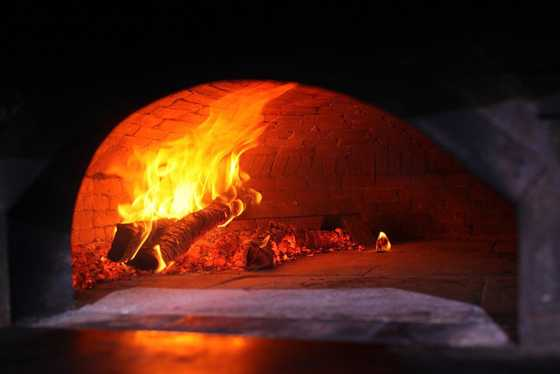
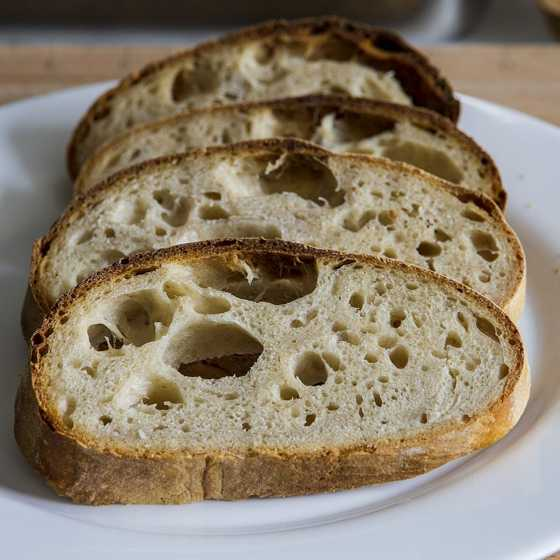
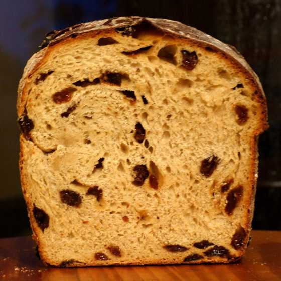
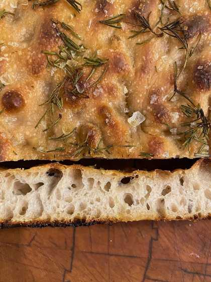
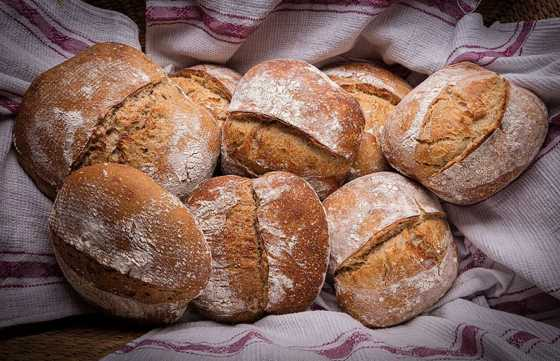
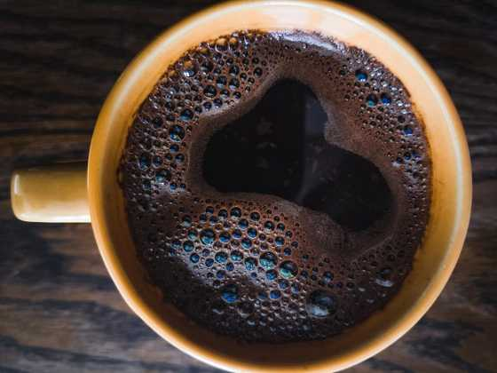

住宅街の白い壁とオレンジの扉
夫婦の手で焼く、
やさしいパンとスープ。
国東産の小麦のパンと、だしから作るスープ。出来合いに頼らず、できるだけ自分たちの手で。そんな想いのパンカフェです。

お店の由来・想い
手づくりを、家族みんなが安心して。
地元紙の取材記事によると、ご夫婦で営むお店です。奥さまは管理栄養士で、ホテルオークラ東京でパン作りを学ばれ、子どもも安心して食べられることを大切にしているとのこと。ご主人は調理師免許を持ち、「出来合いは使わず、極力自分の手で作りたい」という信念で、スープをだしから作っています。パンには国東産の小麦が使われ、白い壁とオレンジ色の扉、オレンジを基調にした店内に菓子パンを中心に20〜30種類が並ぶと紹介されています。
情報源: 大分合同新聞「おおいた味散歩」(2015年) / 個人ブログの来店記 / Instagram
店名「coduchi」の意味は確認できていません。配色(扉のオレンジ・小麦色)や見出しの言い回しは制作側のイメージです。2015年の記事のため現在の様子と異なる場合があります。






メニュー・提供内容
パンと、日替わりのスープ。
パン
菓子パンを中心に20〜30種類(取材時)。野菜と鶏のピタサンドなどが紹介されています。
パンランチ
日替わりのパンとスープ、サラダなどを店内で味わえると紹介されています。
お茶ケーキ
有機茶葉を練り込んだケーキが紹介されています。
| 営業時間 | 準備中 |
|---|---|
| 定休日 | 準備中 |
| 価格 | 準備中 |
| 電話 | 準備中 |
掲載サイトにより営業時間・定休日の記載が食い違うため、確認できるまで「準備中」としています。






口コミ
こんな声が届くお店に(イメージ例)
焼きたてのパンの香りに誘われて入りました。スープがじんわり沁みます。
子どもと一緒でも安心して食べられるのが嬉しいです。また寄ります。
住宅街の落ち着いた雰囲気で、ゆっくりパンランチを楽しめました。
上記は制作側が作成したイメージ例であり、実在のお客様の声ではありません。
写真クレジット
掲載写真はフリー素材のイメージであり、店舗の実際の様子・商品ではありません。
- baguette.jpg:「Baguette-246424」 cocoparisienne / CC0 1.0
- baguettes.jpg:「Baguettes - stonesoup」 jules / stonesoup / CC BY 2.0
- raisin.jpg:「Raisin bread crumb shot (6274216810)」 Jim Champion / CC BY-SA 2.0
- slices.jpg:「Slices of sourdough bread」 Angel Ganev / CC BY 2.0
- round.jpg:「Sourdough Loaf (217346645)」 Dana Hutchinson / CC BY 3.0
- flame.jpg:「Brick-oven-thumbnail」 Beboplu / CC0 1.0
- shelves.jpg:「Loaves of Bread (Unsplash)」 Clark Young / CC0 1.0
- focaccia.jpg:「Focaccia with Crumb」 Fred Benenson / CC BY-SA 4.0
- rolls.jpg:「Home made sour dough bread」 Tomascastelazo / CC BY-SA 4.0
- croissant.jpg:「Freshly baked pastries with coffee and cookies on a table」 Shixart1985 / CC BY 2.0
- cup-marble.jpg:「Cup of coffee on café table」 Ssu / CC BY-SA 4.0
- cup-gray.jpg:「Gray espresso cup with amaretto」 Friedrich Haag / CC BY-SA 4.0
- wheat.jpg:「Wheat stalks」 Quer / CC0 1.0
- flour.jpg:「Flours」 Mudd1 / CC BY-SA 3.0
- cup-yellow.jpg:「Top view of a yellow cup of black coffee (51162366368)」 Ivan Radic / CC BY 2.0
- glass.jpg:「The cup of coffee on a wooden table (47939081677)」 Artem Beliaikin / CC BY 2.0